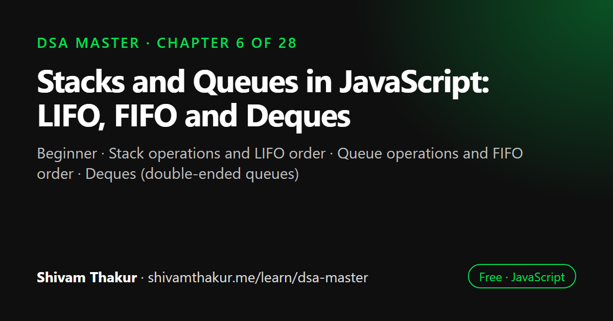

Chapter 6 of 28 · Beginner
Stacks and Queues in JavaScript: LIFO, FIFO and Deques
Stacks & Queues — Discipline Over Access

A stack is a last-in-first-out (LIFO) collection where you add and remove from the same end; a queue is first-in-first-out (FIFO), adding at the back and removing from the front. This chapter implements both in JavaScript, introduces the deque, explains why Array.shift makes a slow queue, and shows where these structures power real software.
In this chapter you will learn
- Stack operations and LIFO order
- Queue operations and FIFO order
- Deques (double-ended queues)
- Efficient queues without Array.shift
- Real-world uses: undo, parsing, BFS, scheduling
6.0 Why This Chapter Matters More Than It Looks
Stacks and queues look almost too simple to deserve a full chapter — "it's just an array with rules," a beginner might think. But that's exactly the point, and it's a profound one: a stack and a queue are not new capabilities, they are deliberate restrictions on an existing capability (the array/linked list), and those restrictions are precisely what make certain algorithms correct, simple, and efficient. You already have every tool needed to build these from Chapters 3 and 5. This chapter is about learning to recognize when imposing that discipline is exactly the right move — because stacks silently power recursion (Chapter 2), undo/redo, expression parsing, and DFS (Chapter 11), while queues silently power BFS (Chapter 11), task scheduling, and rate limiting.
6.1 The Stack: Last-In-First-Out (LIFO)
Definition: A stack is a linear data structure that supports adding and removing elements only from one end (called the "top"), following Last-In-First-Out order — the most recently added element is always the first one removed.
ASCII Visualization
push(40)
|
v
+------+
| 40 | <- TOP (most recently added)
+------+
| 30 |
+------+
| 20 |
+------+
| 10 | <- BOTTOM (added first)
+------+
pop() removes and returns 40 (the top). You can NEVER access 20 or 10
directly without first removing everything above them.6.1.1 Core Operations
| Operation | Description | Complexity |
|---|---|---|
push(value) |
Add to the top | O(1) |
pop() |
Remove and return the top | O(1) |
peek() / top() |
View the top without removing it | O(1) |
isEmpty() |
Check if the stack has no elements | O(1) |
Every single operation is O(1) — this is the entire reward for accepting the LIFO restriction. Compare this to a general array, which supports O(1) operations only at one specific end (push/pop), while a stack guarantees you never need the expensive operations (shift/unshift/middle splice) because the interface simply doesn't expose them.
6.1.2 Implementation: Array-Based Stack
class Stack {
#items = [];
push(value) {
this.#items.push(value);
return this;
}
// Time: O(1) amortized (Chapter 3's dynamic array doubling)
pop() {
if (this.isEmpty()) {
throw new Error('Stack underflow: cannot pop from an empty stack');
}
return this.#items.pop();
}
// Time: O(1) — removing from the END of an array, never the front!
peek() {
if (this.isEmpty()) {
throw new Error('Cannot peek an empty stack');
}
return this.#items[this.#items.length - 1];
}
// Time: O(1)
isEmpty() {
return this.#items.length === 0;
}
get size() {
return this.#items.length;
}
}
const stack = new Stack();
stack.push(10).push(20).push(30);
console.log(stack.pop()); // 30
console.log(stack.peek()); // 20
console.log(stack.size); // 26.1.3 Implementation: Linked-List-Based Stack
Since Chapter 5 taught us that linked list insertion/deletion at the head is O(1), a singly linked list is an equally valid backing structure for a stack — you just treat the head as the "top."
class LinkedStack {
#head = null;
#size = 0;
push(value) {
this.#head = new ListNode(value, this.#head); // new node becomes the new head
this.#size++;
return this;
}
// Time: O(1) — no walking required, unlike a general linked list insert-at-position
pop() {
if (this.#head === null) {
throw new Error('Stack underflow');
}
const value = this.#head.value;
this.#head = this.#head.next;
this.#size--;
return value;
}
// Time: O(1)
peek() {
if (this.#head === null) throw new Error('Cannot peek an empty stack');
return this.#head.value;
}
get size() {
return this.#size;
}
}
class ListNode {
constructor(value, next = null) {
this.value = value;
this.next = next;
}
}6.2 The Queue: First-In-First-Out (FIFO)
Definition: A queue is a linear data structure that supports adding elements at one end (the "rear"/"back") and removing elements from the other end (the "front"), following First-In-First-Out order — the earliest-added element is always the first one removed.
ASCII Visualization
FRONT REAR
v v
+------+ +------+ +------+ +------+
| 10 | <-- | 20 | <-- | 30 | <-- | 40 | <- enqueue(40) adds here
+------+ +------+ +------+ +------+
^
dequeue() removes and returns 10 (the front, added first)6.2.1 Core Operations
| Operation | Description | Complexity (correctly implemented) |
|---|---|---|
enqueue(value) |
Add to the rear | O(1) |
dequeue() |
Remove and return the front | O(1) |
peek() / front() |
View the front without removing it | O(1) |
isEmpty() |
Check if empty | O(1) |
6.2.2 Implementation: Linked-List-Based Queue (The Correct, Simple Approach)
Because our SinglyLinkedList from Chapter 5 maintains both a #head and a #tail pointer, it's a perfect fit: enqueue at the tail (O(1)), dequeue at the head (O(1)).
class Queue {
#head = null;
#tail = null;
#size = 0;
enqueue(value) {
const newNode = new ListNode(value);
if (this.#tail === null) {
this.#head = newNode;
this.#tail = newNode;
} else {
this.#tail.next = newNode;
this.#tail = newNode;
}
this.#size++;
return this;
}
// Time: O(1) — adding at the tail, which we track directly
dequeue() {
if (this.#head === null) {
throw new Error('Cannot dequeue from an empty queue');
}
const value = this.#head.value;
this.#head = this.#head.next;
if (this.#head === null) {
this.#tail = null; // queue became empty
}
this.#size--;
return value;
}
// Time: O(1) — removing at the head, no shifting required!
peek() {
if (this.#head === null) throw new Error('Cannot peek an empty queue');
return this.#head.value;
}
get size() {
return this.#size;
}
}
class ListNode {
constructor(value, next = null) {
this.value = value;
this.next = next;
}
}
const queue = new Queue();
queue.enqueue(10).enqueue(20).enqueue(30);
console.log(queue.dequeue()); // 10
console.log(queue.peek()); // 20This is precisely why we studied linked lists in Chapter 5 before this chapter: a queue is one of the most natural, canonical real-world uses of a linked list, specifically because it needs O(1) operations at both ends simultaneously, something a plain array structurally cannot offer without one of the two ends paying an O(n) tax.
6.2.3 Implementation: The Circular Buffer (Array-Based Queue Done Right)
There is a way to build an array-based queue with genuinely O(1) enqueue and dequeue — the circular buffer (also called a "ring buffer"). This is a real, widely-used production technique (used in audio/video streaming buffers, OS-level I/O buffers, and high-performance message queues), and it deserves a full walkthrough.
Intuition: A Clock Face
Think of an analog clock face. The hour hand doesn't stop at 12 and refuse to continue — it wraps back around to 1. A circular buffer treats a fixed-size array the same way: instead of physically shifting elements when we dequeue from the front, we simply track two index pointers (front and rear) that wrap around using modulo arithmetic when they reach the end of the array.
class CircularQueue {
#buffer;
#front = 0;
#rear = 0;
#size = 0;
#capacity;
constructor(capacity) {
this.#capacity = capacity;
this.#buffer = new Array(capacity);
}
enqueue(value) {
if (this.#size === this.#capacity) {
throw new Error('Queue is full'); // fixed-capacity structure — a real constraint!
}
this.#buffer[this.#rear] = value;
this.#rear = (this.#rear + 1) % this.#capacity; // wrap around using modulo
this.#size++;
}
// Time: O(1) — no shifting, just index arithmetic
dequeue() {
if (this.#size === 0) {
throw new Error('Queue is empty');
}
const value = this.#buffer[this.#front];
this.#buffer[this.#front] = undefined; // allow garbage collection of the removed value
this.#front = (this.#front + 1) % this.#capacity; // wrap around
this.#size--;
return value;
}
// Time: O(1) — again, just index arithmetic, no shifting!
get size() {
return this.#size;
}
}Dry Run: Watch the Indices Wrap Around
capacity = 4, buffer = [_, _, _, _], front=0, rear=0, size=0
enqueue(10): buffer=[10,_,_,_] rear=(0+1)%4=1 size=1
enqueue(20): buffer=[10,20,_,_] rear=(1+1)%4=2 size=2
enqueue(30): buffer=[10,20,30,_] rear=(2+1)%4=3 size=3
dequeue(): returns 10. buffer=[_,20,30,_] front=(0+1)%4=1 size=2
enqueue(40): buffer=[_,20,30,40] rear=(3+1)%4=0 size=3
<- rear WRAPPED AROUND back to index 0!
enqueue(50): buffer=[50,20,30,40] rear=(0+1)%4=1 size=4
<- new value 50 was written into index 0, which is now
"empty" from the dequeue()'s perspective, even though
it's the FIRST physical slot in the array!
Logical queue order (front to rear): 20, 30, 40, 50
Physical array layout: [50, 20, 30, 40]
^index 0 is NOT the logical front anymore!6.3 The Deque (Double-Ended Queue)
Definition: A deque (pronounced "deck") is a generalization of both stacks and queues that supports O(1) insertion and removal at both ends.
class Deque {
#head = null;
#tail = null;
#size = 0;
addFront(value) {
const newNode = new DequeNode(value, null, this.#head);
if (this.#head) this.#head.prev = newNode;
this.#head = newNode;
if (this.#tail === null) this.#tail = newNode;
this.#size++;
}
// Time: O(1) — this is exactly DoublyLinkedList.prepend() from Chapter 5!
addRear(value) {
const newNode = new DequeNode(value, this.#tail, null);
if (this.#tail) this.#tail.next = newNode;
this.#tail = newNode;
if (this.#head === null) this.#head = newNode;
this.#size++;
}
// Time: O(1) — this is DoublyLinkedList.append()
removeFront() {
if (this.#head === null) throw new Error('Deque is empty');
const value = this.#head.value;
this.#head = this.#head.next;
if (this.#head) this.#head.prev = null;
else this.#tail = null;
this.#size--;
return value;
}
removeRear() {
if (this.#tail === null) throw new Error('Deque is empty');
const value = this.#tail.value;
this.#tail = this.#tail.prev;
if (this.#tail) this.#tail.next = null;
else this.#head = null;
this.#size--;
return value;
}
get size() {
return this.#size;
}
}
class DequeNode {
constructor(value, prev = null, next = null) {
this.value = value;
this.prev = prev;
this.next = next;
}
}6.4 JavaScript-Specific Note: Array as a Stack, and the Case Against Array as a Queue
Practical Guidance
In real, everyday JavaScript code (not just interview settings), you'll frequently see a plain array used directly as a stack:
const stack = [];
stack.push('a');
stack.push('b');
console.log(stack.pop()); // 'b'This is completely idiomatic and correct — no need to wrap it in a class for simple cases, since push/pop on the end of an array genuinely are O(1) amortized.
However, you should never casually reach for a plain array as a queue via shift() in performance-sensitive code, for the O(n) reason covered in section 6.2.1. If you need a real queue in JavaScript and don't want to hand-roll a linked-list-based one, common practical options include:
- Using two array-based stacks together (the "two stacks make a queue" trick — see the coding problems below), which amortizes to O(1) per operation across a sequence, similar in spirit to Chapter 3's amortized array doubling.
- Using an index-based approach: instead of physically shifting elements out, just track a
startIndexand periodically clean up, avoiding true.shift()calls entirely. - For production Node.js systems, using a well-tested library (e.g., a dedicated double-ended queue package) rather than hand-rolling one, once correctness and edge cases matter more than the learning exercise.
Dry Run
enqueue(1): inStack=[1] outStack=[]
enqueue(2): inStack=[1,2] outStack=[]
enqueue(3): inStack=[1,2,3] outStack=[]
dequeue(): outStack is empty -> move everything from inStack, reversing:
pop 3 from inStack, push to outStack -> outStack=[3]
pop 2 from inStack, push to outStack -> outStack=[3,2]
pop 1 from inStack, push to outStack -> outStack=[3,2,1]
inStack=[]
Now pop from outStack: returns 1 <- correctly the FIRST enqueued value!
outStack=[3,2]
dequeue(): outStack is NOT empty -> just pop it directly: returns 2
outStack=[3]
enqueue(4): inStack=[4]
dequeue(): outStack still has [3] -> pop directly: returns 3
outStack=[]6.5 Real-World Applications (Why These Structures Actually Matter)
6.5.1 Stacks: Function Call Stack, Undo/Redo, Expression Parsing
We already met the call stack in Chapter 2 — it's a literal, physical stack, and every single recursive call you've written in this book has been silently relying on stack discipline (LIFO: the most recently called function is the first to return).
Balanced parentheses checking is the canonical "hello world" of stack usage:
function isBalanced(str) {
const stack = [];
const pairs = { ')': '(', ']': '[', '}': '{' };
for (const char of str) {
if (char === '(' || char === '[' || char === '{') {
stack.push(char);
} else if (char === ')' || char === ']' || char === '}') {
if (stack.pop() !== pairs[char]) {
return false; // mismatched or empty stack when we needed a match
}
}
}
return stack.length === 0; // must have closed everything we opened
}
console.log(isBalanced('{[()()]}')); // true
console.log(isBalanced('{[(])}')); // falseDry run for '{[(])}':
char='{': push '{' stack=['{']
char='[': push '[' stack=['{','[']
char='(': push '(' stack=['{','[','(']
char=')': pop() = '(', pairs[')'] = '(' -> match! stack=['{','[']
char=']': pop() = '[', pairs[']'] = '[' -> match! stack=['{']
Wait — let's re-trace carefully since this string is deliberately malformed:
'{[(])}': { [ ( ] ) }
char='{': push '{' stack=['{']
char='[': push '[' stack=['{','[']
char='(': push '(' stack=['{','[','(']
char=']': pop() = '(', pairs[']'] = '[' -> '(' !== '[' -> MISMATCH -> return false ✓6.5.2 Queues: Task Scheduling, Rate Limiting, and BFS (A Direct Preview of Chapter 11)
Definition-by-preview: Breadth-First Search (BFS), the algorithm that explores a graph or tree "layer by layer" (all neighbors at distance 1, then all neighbors at distance 2, and so on), is fundamentally powered by a queue. We will build BFS in full in the Trees and Graphs chapters — but it's worth seeing the skeleton now, so the connection between "queue" (this chapter) and "BFS" (later chapters) is cemented as one continuous idea rather than two separate topics.
function bfsSkeleton(startNode, getNeighbors) {
const queue = new Queue(); // our Chapter 6 Queue class!
const visited = new Set(); // our Chapter 4 Set!
queue.enqueue(startNode);
visited.add(startNode);
const order = [];
while (queue.size > 0) {
const current = queue.dequeue();
order.push(current);
for (const neighbor of getNeighbors(current)) {
if (!visited.has(neighbor)) {
visited.add(neighbor);
queue.enqueue(neighbor);
}
}
}
return order;
}Notice how much of this book is already present in this ten-line skeleton: Chapter 4's Set for O(1) visited-tracking, and this chapter's Queue for the FIFO layer-by-layer ordering that makes BFS explore the closest nodes first. The reason BFS uses a queue and not a stack is precisely FIFO order: we want to fully finish exploring everything at the current "distance" before moving further out, and a queue's FIFO discipline is exactly what enforces that layer-by-layer exploration order. (Contrast: DFS, covered in the same later chapters, uses a stack — either explicitly or via the recursive call stack from Chapter 2 — because it deliberately dives as deep as possible along one path before backtracking, which is LIFO behavior.)
6.6 Edge Cases and Gotchas Checklist
- Empty stack/queue operations. Does your
pop()/dequeue()/peek()throw a clear error (or return a sentinel likeundefined, per your chosen contract) rather than silently returning garbage or crashing unpredictably? - Single-element stack/queue. Verify push-then-immediately-pop, and enqueue-then-immediately-dequeue, both correctly empty the structure and reset any head/tail/size bookkeeping.
- Circular buffer full/empty ambiguity. A naive circular buffer implementation using only
front/rearindices (no separatesizecounter) cannot distinguish "completely full" from "completely empty," since both can present asfront === rear. Our implementation above sidesteps this entirely by tracking#sizeexplicitly — always do this, or deliberately waste one slot as a well-known alternative technique. - Never use
.shift()for a "real" queue in performance-sensitive code — this is worth a dedicated re-read of section 6.2.1 if you find yourself doing this out of habit. - Stack overflow vs. stack underflow terminology — "overflow" means you tried to push beyond capacity (relevant for fixed-size stacks); "underflow" means you tried to pop/peek an empty stack. Use this terminology precisely; interviewers notice.
6.7 Chapter Summary
This chapter showed that stacks and queues are not new fundamental capabilities but deliberate restrictions placed on structures you already fully understand (arrays from Chapter 3, linked lists from Chapter 5) — restrictions that buy correctness, simplicity, and guaranteed O(1) operations by simply refusing to expose the expensive operations at all. We built the stack (LIFO) both array-backed (push/pop from the array's end, never the front — a critical implementation detail) and linked-list-backed, and connected it directly back to Chapter 2's call stack, plus the canonical balanced-parentheses/nesting/undo problem family.
We built the queue (FIFO) and spent real time on the single most common beginner mistake in this entire chapter: reaching for Array.prototype.shift() for dequeue, which silently turns an intended O(1) operation into O(n) due to Chapter 3's shifting cost — and fixed it two ways, first with a linked-list-backed queue (a genuinely canonical, natural use case for the doubly-pointer-tracked list from Chapter 5), then with a circular buffer, a real production technique using modulo arithmetic to "wrap around" a fixed-size array without ever shifting elements, trading unbounded growth for better cache locality and lower per-element memory overhead.
We generalized both structures into the deque, recognizing it as nothing more than a doubly linked list from Chapter 5 used with a different name and a different mental frame — a genuinely important unifying realization that collapses "three data structures to memorize" into "one structure, three usage disciplines." We proved the elegant "two stacks make a queue" technique's O(1) amortized complexity using the same amortized-analysis reasoning that's now appeared three times across this book (dynamic array doubling in Chapter 3, hash table resizing in Chapter 4, and here) — a pattern worth explicitly recognizing as a recurring rhythm in algorithm analysis, not three unrelated tricks. Finally, we closed with the single most important forward-looking fact in the chapter: BFS uses a queue for FIFO layer-by-layer exploration; DFS uses a stack (or the recursive call stack) for LIFO depth-first exploration — the exact seed that the Trees and Graphs chapters ahead will grow into full algorithms.
6.8 Revision Notes
- Stacks and queues are restricted-interface versions of arrays/linked lists, not new fundamental capabilities — the restriction is the value.
- Array-based stack: push/pop from the array's END only — never the front, or you silently reintroduce Chapter 3's O(n) shifting cost.
- Naive array-based queue (using
.shift()for dequeue) is a classic O(n)-per-operation trap; use a linked-list-backed queue or a circular buffer instead. - Circular buffer: fixed-capacity, O(1) enqueue/dequeue via modulo-wrapped index arithmetic; trade unbounded size for cache locality and lower memory overhead.
- Deque = doubly linked list (Chapter 5) with O(1) operations at both ends; stacks and queues are each just one usage discipline imposed on this same underlying shape.
- "Two stacks make a queue" achieves O(1) amortized dequeue — each element is transferred between stacks at most once in its lifetime, the same amortized-analysis shape as Chapters 3 and 4.
- BFS uses a queue (FIFO, layer-by-layer); DFS uses a stack or recursion (LIFO, depth-first) — this single fact anchors the entire Trees/Graphs traversal chapters ahead.
6.9 Mind Map (ASCII)
STACKS & QUEUES
|
+------------------+-------+-------+------------------+
| | | |
STACK QUEUE DEQUE REAL APPLICATIONS
(LIFO) (FIFO) (both ends O(1)) |
| | | Stack: call stack
Array (end only) Naive shift() = Doubly linked (Ch.2), undo/redo,
or Linked (head) = O(n) TRAP! list (Ch.5) with balanced parens
| Linked-list a different name |
push/pop O(1) (head+tail) or usage frame Queue: BFS
Ch.2 call stack = O(1) correct | (layer-by-layer,
Balanced parens Circular buffer Powers Sliding Ch.11 preview)
= O(1), fixed Window Max
capacity, (Monotonic Queue
modulo wrap chapter, later)
|
TWO STACKS = QUEUE
(O(1) amortized,
same rhythm as
Ch.3 & Ch.4
amortized analysis)6.10 Cheat Sheet
STACK (LIFO) QUEUE (FIFO)
=============== ================
push(x) O(1) enqueue(x) O(1)
pop() O(1) dequeue() O(1) -- ONLY if NOT using Array.shift()!
peek() O(1) peek() O(1)
Array-backed: push/pop from the END NEVER: array.shift() for dequeue (O(n) trap)
Linked-backed: push/pop at HEAD Linked-backed: enqueue at TAIL, dequeue at HEAD
Circular buffer: fixed size, modulo index wrap
DEQUE = doubly linked list, O(1) both ends. Stack/Queue are USAGE DISCIPLINES on top of it.
DECISION SIGNALS
===================
"matching / nesting / most recent unmatched / undo" -> Stack
"layer by layer / process in arrival order / BFS" -> Queue
"need both ends fast / sliding window max" -> Deque
"fixed-size, performance-critical, cache-friendly" -> Circular Buffer
TWO STACKS -> QUEUE
=======================
inStack: all enqueues. outStack: all dequeues.
On dequeue, if outStack empty: pour ALL of inStack into outStack (reversing order), then pop.
Amortized O(1) -- each element moves between stacks at most once in its lifetime.6.11 Key Takeaways
- Stacks and queues are restricted, discipline-enforcing interfaces over arrays/linked lists — not new primitive capabilities.
- Always push/pop a stack from the array's end, never the front.
- Never use
Array.prototype.shift()for a queue's dequeue in performance-sensitive code — use a linked list or circular buffer instead. - A deque is a doubly linked list wearing a different name — stacks and queues are each just one usage discipline on the same structure.
- "Two stacks make a queue" is O(1) amortized — the same amortized-analysis rhythm seen in Chapters 3 and 4.
- BFS uses a queue (FIFO); DFS uses a stack or recursion (LIFO) — this single distinction anchors the entire graph/tree traversal chapters ahead.
6.12 20 Multiple Choice Questions
Tap an answer to check it. Your score updates as you go.
Score: 0 / 0 answered (20 questions)
What ordering discipline does a stack enforce?
What ordering discipline does a queue enforce?
Why should an array-based stack push/pop from the array's END, not the front?
What is wrong with implementing a queue's
dequeue()usingArray.prototype.shift()?What data structure is ideal for implementing a queue with guaranteed O(1) enqueue and dequeue?
What is a circular buffer's key mechanism for avoiding element shifting?
What is the main trade-off of a circular buffer compared to a linked-list-based queue?
What is a deque?
What existing structure is a deque essentially equivalent to?
In the "two stacks make a queue" technique, when does the expensive transfer between stacks happen?
What is the amortized time complexity of dequeue in the "two stacks" queue implementation?
Which real-world mechanism is a stack fundamentally powering, as covered in Chapter 2?
What problem signal most strongly suggests using a stack?
Why does BFS use a queue rather than a stack?
Why does DFS typically use a stack (or recursion) rather than a queue?
What ambiguity must a circular buffer implementation resolve regarding
front === rear?What does "stack underflow" mean?
Which of these is a legitimate, idiomatic use of a plain JavaScript array?
What is the primary benefit of choosing a circular buffer over a linked-list queue in performance-critical code?
What class from Chapter 5 does the
Dequeimplementation in this chapter directly reuse the shape of?
Show the answer key
1-b, 2-b, 3-b, 4-b, 5-b, 6-b, 7-b, 8-b, 9-b, 10-b, 11-c, 12-b, 13-b, 14-b, 15-b, 16-b, 17-b, 18-b, 19-b, 20-b
6.13 20 Coding Problems
Easy
- Implement a stack using a plain array with
push/pop/peek/isEmptymethods. - Implement a queue using two linked-list pointers (head and tail), from memory.
- Write a function using a stack to reverse a string (push every character, then pop them all).
- Write a function that checks if a given string of brackets
()[]{}is balanced (section 6.5.1), from memory. - Implement
peek()for both a stack and a queue, and state the complexity of each.
Medium
- Implement the "two stacks make a queue" technique from memory (section 6.4), then verify against the book's version.
- Implement a circular buffer-based queue with a fixed capacity, from memory (section 6.2.3).
- Given a string containing digits and
+/-/*//in postfix (Reverse Polish) notation, evaluate it using a stack. - Implement a "min stack" that supports
push,pop,peek, andgetMin(), all in O(1) time (hint: maintain a second stack tracking running minimums). - Given a queue, write a function to reverse the first
kelements of the queue while keeping the rest in original order, using an auxiliary stack.
Hard
- Implement a stack that supports
push,pop,top, and retrieving the maximum element, all in O(1) — extend the "min stack" idea from problem 9. - Given an array of daily temperatures, find, for each day, how many days you'd have to wait until a warmer temperature, using a stack in O(n) (a direct preview of the Monotonic Stack chapter — attempt with a plain stack first).
- Implement a queue using a single stack and recursion (no second stack allowed) — a genuinely tricky variant of the two-stacks trick.
- Design a browser history feature using two stacks (back-stack and forward-stack), supporting
visit(url),back(), andforward(). - Given a string, remove all adjacent duplicate characters repeatedly (e.g.,
"abbaca"→"ca") using a stack, in a single O(n) pass.
Interview Level
- (Google-level) Implement a basic calculator that evaluates a string expression containing
+,-, and parentheses (no multiplication/division), using a stack to handle nested parentheses correctly. - (Amazon-level) Design a task scheduler that processes tasks in FIFO order but supports "priority interrupts" (a task that jumps to the front), using a combination of a queue and a small auxiliary structure — discuss the trade-offs of your design in comments.
- (Microsoft-level) Given a sequence of stack
push/popoperations, determine whether a claimed final popped-order sequence is achievable from a given pushed-order sequence. - (Meta-level) Implement a sliding window maximum using a deque (a full preview of the Monotonic Queue chapter — attempt the O(n) approach where the deque stores indices, keeping only candidates that could still be the max).
- (Netflix-level) Design a video-buffering system's playback queue using a circular buffer, supporting
enqueue(chunk),dequeue(), and graceful handling of a "buffer full" (backpressure) condition — discuss in comments how you'd extend it to auto-resize versus applying true backpressure (rejecting/blocking new writes).
6.14 5 Interview Questions
- "Implement a queue using two stacks, and tell me its amortized complexity." (Tests the classic pattern and the ability to prove, not just claim, O(1) amortized.)
- "What's wrong with implementing a queue's dequeue using
Array.prototype.shift()?" (Tests whether Chapter 3's shifting-cost lesson stuck.) - "Design a stack that supports retrieving the minimum element in O(1)." (Tests the auxiliary-stack technique, a very common follow-up question.)
- "Why does BFS use a queue while DFS uses a stack?" (Tests the single most important forward-looking fact in this chapter.)
- "When would you choose a circular buffer over a linked-list-based queue?" (Tests understanding of the fixed-capacity/cache-locality trade-off.)
6.15 3 Real Projects
- Complete Stack/Queue/Deque Library: Build out
Stack,Queue,CircularQueue, andDequefrom this chapter into a small, tested personal library, with a self-check script asserting FIFO/LIFO correctness and edge-case handling (empty, single-element, full-capacity for the circular buffer). - Expression Evaluator: Build a small calculator supporting
+,-,*,/, and parentheses, using two stacks (one for values, one for operators) — a direct, practical extension of the balanced-parentheses and postfix-evaluation problems in this chapter. - Undo/Redo Text Editor Simulation: Build a small CLI tool simulating a text editor's undo/redo feature using two stacks (undo-stack and redo-stack), where each user action pushes onto the undo-stack,
undo()pops it and pushes onto the redo-stack, and any new action clears the redo-stack — a realistic, complete application of stack discipline.
6.16 Further Reading
- MDN Web Docs: "Array.prototype.push/pop/shift/unshift" — for exact spec-level complexity-adjacent behavior notes.
- Steven Skiena, The Algorithm Design Manual, chapter on stacks/queues, for additional real-world design discussion.
- Search "ring buffer" or "circular buffer" implementations in audio/video processing contexts, for a deeper dive into this chapter's most production-relevant technique.
- The upcoming "Monotonic Stack" and "Monotonic Queue" masterclass chapters later in this book, which build directly and extensively on everything in this chapter.
Stack and Queue in JavaScript: frequently asked questions
What is the difference between a stack and a queue?
A stack removes the most recently added item first (last in, first out), like a pile of plates. A queue removes the oldest item first (first in, first out), like a line at a ticket counter.
Can I use a JavaScript array as a stack?
Yes. push and pop work on the end of the array and are O(1) amortized, which makes an array a good stack. Avoid unshift and shift for stack operations because they are O(n).
Why is Array.shift slow for a queue?
shift removes the first element and moves every remaining element down one index, so each dequeue is O(n). For a fast queue use a linked list, a circular buffer or a head index that moves forward.
Where are stacks and queues used in real applications?
Stacks power undo history, the browser back button, expression parsing, bracket matching and the function call stack. Queues power task schedulers, message queues, print queues, rate limiters and breadth-first search.